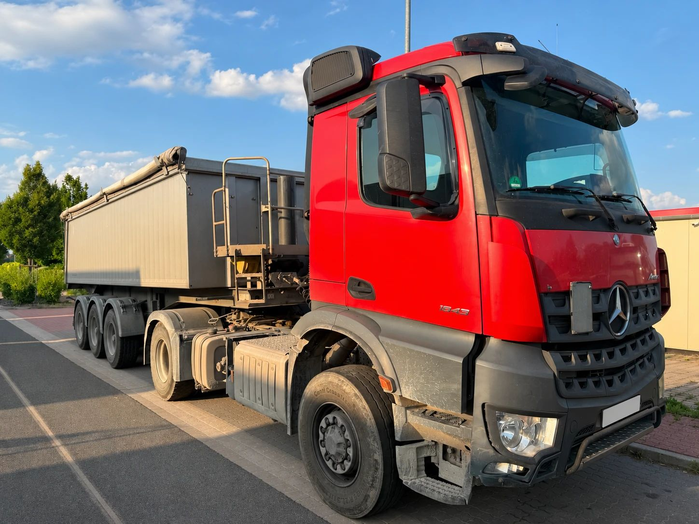
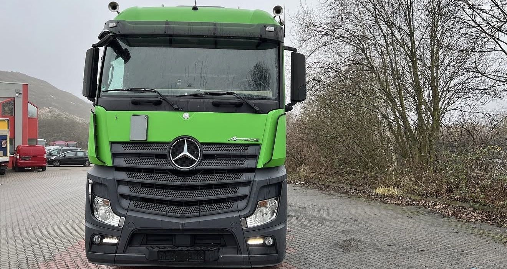
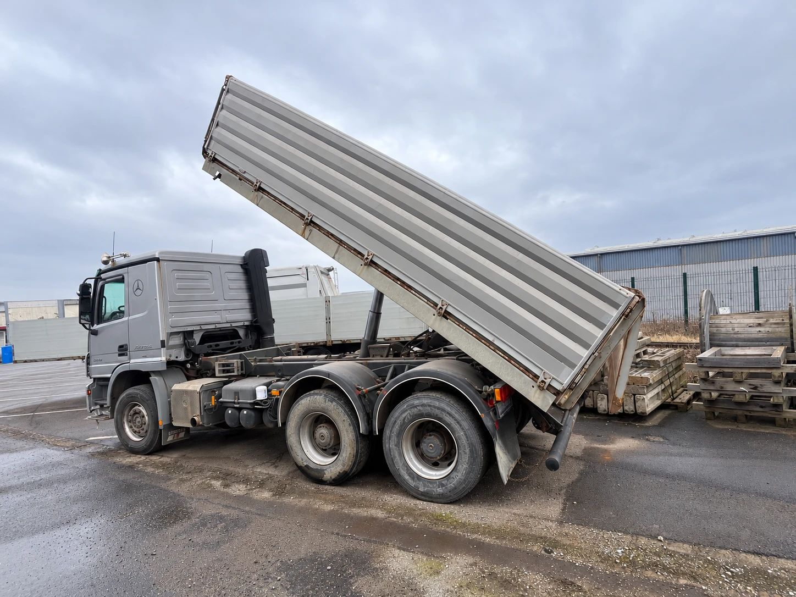
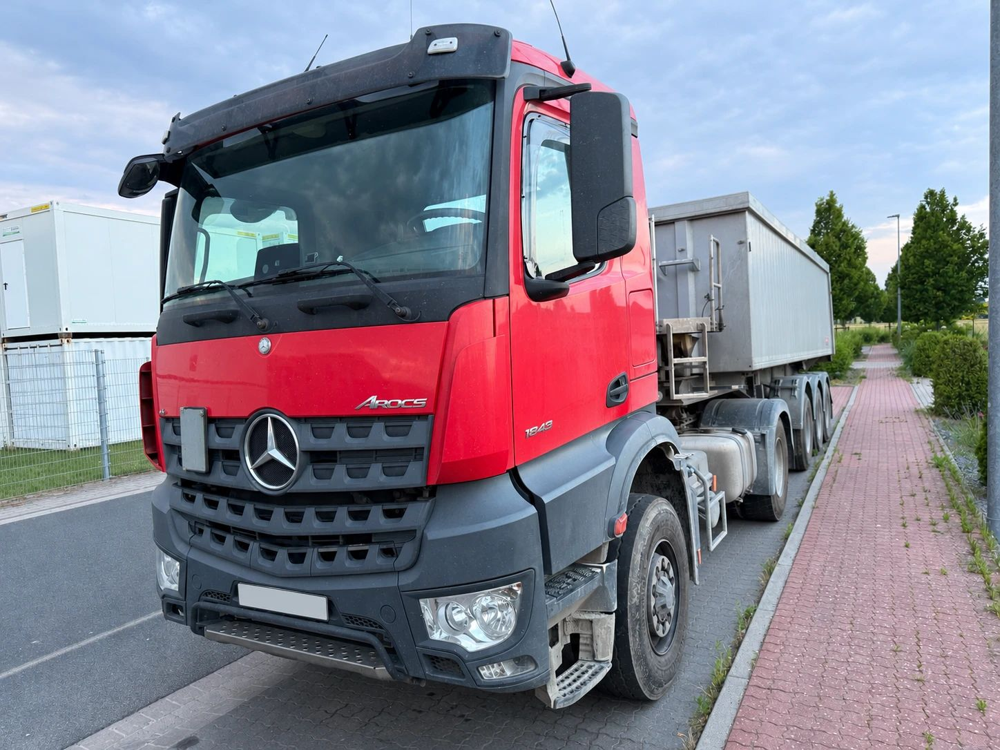

Von vorne sehen sie sich ähnlich: dasselbe Fahrerhaus mit dem großen Stern, dieselben Motoren. Trotzdem sind Arocs und Actros zwei verschiedene Baureihen mit zwei verschiedenen Aufgaben. Der Actros ist für die Straße gebaut, vor allem für den Fernverkehr. Der Arocs ist der LKW für die Baustelle.
Wir bringen über 30 Jahre Erfahrung im Fahrzeughandel mit, und beide Baureihen kommen bei uns regelmäßig auf den Hof. In diesem Beitrag zeigen wir, woran Sie die beiden unterscheiden, was technisch dahintersteckt und worauf es beim Verkauf ankommt.
Kurz gesagt
- Actros: Straße und Fernverkehr. Meist Sattelzugmaschine oder Fahrgestell mit Plane, Koffer oder Kühlaufbau, große Fahrerhäuser zum Übernachten, Luftfederung.
- Arocs: Baustelle und Schwerverkehr. Kipper, Betonmischer, Abrollkipper, Baustoff-Sattelzugmaschine oder Schwerlastzug, oft mit Allrad, kurze und robuste Fahrerhäuser.

Beide stammen von derselben Plattform. Mercedes-Benz hat sie Anfang der 2010er-Jahre in drei Baureihen aufgeteilt: Actros für den Fernverkehr, Antos für den schweren Verteilerverkehr und Arocs für den Bau (Daimler, Januar 2013).
Vor 2013 gab es keinen Arocs
Das ist der wichtigste Punkt für alle, die einen älteren Baustellen-LKW von Mercedes-Benz besitzen. Der Arocs wurde im Januar 2013 vorgestellt und kam ab Mai 2013 nach und nach in Europa auf den Markt. Davor hießen auch die Kipper und Betonmischer von Mercedes-Benz Actros, in den leichteren Klassen Axor.
Ein Baustellen-LKW aus dem Jahr 2008 ist also ein Actros, kein Arocs, selbst wenn er genau dieselbe Arbeit gemacht hat. Wer seinen Kipper als „Arocs“ inseriert, obwohl er älter ist, sorgt nur für Rückfragen. Mehr zu den älteren Baureihen lesen Sie in unserem Beitrag Actros MP1 bis MP5.
Woran erkennt man einen Arocs?
Am einfachsten am Schriftzug: Er steht vorne neben dem Stern und an der Tür. Aber auch ohne Schriftzug gibt es Merkmale.
Der Kühlergrill. Der Arocs hat einen kräftigen Grill mit breiten, waagerechten Lamellen. Beim Actros der Baureihe ab 2011 sind die Lamellen schmaler und mit einem feinen Lochmuster versehen.
Die Front. Beim Arocs ist der untere Teil der Front auf Stöße ausgelegt, mit robustem Stoßfänger und großer Bodenfreiheit. Beim Actros ist die Front glatter und auf geringen Luftwiderstand getrimmt.
Das Fahrerhaus. Ein Arocs hat meist ein kurzes oder mittleres Fahrerhaus mit 2,30 Meter Breite. Das reicht, wenn der Fahrer abends nach Hause fährt. Beim Actros sind dagegen lange und breite Fahrerhäuser mit 2,50 Meter Breite und Hochdach üblich, weil der Fahrer im Fernverkehr darin übernachtet.

Ganz sicher sind Sie mit einem Blick in die Zulassungsbescheinigung Teil I. Unter D.3 steht die Handelsbezeichnung, also Arocs oder Actros.
Was unter dem Fahrerhaus anders ist
Antrieb. Der Actros fährt fast immer mit Hinterradantrieb, meist auf zwei oder drei Achsen. Den Arocs gibt es dagegen mit zwei, drei oder vier Achsen und bis zum Allradantrieb 8x8. Neben dem klassischen Allrad gibt es den Hydraulic Auxiliary Drive: einen hydraulischen Vorderradantrieb, den der Fahrer bei Bedarf zuschaltet, etwa auf einer schlammigen Baustelle. Auf der Straße spart der Arocs dann das Gewicht und den Verbrauch eines vollen Allradantriebs (Mercedes-Benz Trucks).
Federung. Ein Actros fährt in der Regel mit Luftfederung, ein Arocs häufig mit Stahlfedern. Die sind unempfindlicher, wenn der Wagen mit voller Mulde über unbefestigten Boden fährt.
Loader und Grounder. Beim Arocs gibt es zwei Ausführungen für entgegengesetzte Ziele. Der Loader spart Gewicht, damit mehr Nutzlast bleibt, etwa beim Betonmischer oder Silo. Der Grounder ist für schweres Gelände verstärkt und nimmt dafür etwas mehr Eigengewicht in Kauf.
Schwerlast. Für sehr schwere Transporte gibt es den Arocs SLT mit dem großen 15,6-Liter-Motor und bis zu 625 PS. Er zieht Lasten bis 250 Tonnen und hat dafür eine Turbo-Retarder-Kupplung, die das Anfahren mit schweren Lasten schont (Wikipedia). Eine solche Variante gibt es zwar auch als Actros, auf den meisten Baustellen sieht man aber den Arocs.

Was beide gemeinsam haben
Die Motoren kommen aus derselben Familie: Reihensechszylinder mit 10,7, 12,8 oder 15,6 Liter Hubraum, für leichtere Arocs auch ein 7,7-Liter-Motor. Alle erfüllen Euro VI. Auch Cockpit, Getriebe und viele Assistenzsysteme sind gleich oder sehr ähnlich. Mit der Zeit hat der Arocs viele Neuerungen des Actros übernommen, etwa Kameras statt Außenspiegel als Option.
Auch die Zahl an der Tür funktioniert bei beiden gleich. Die ersten beiden Ziffern stehen für das zulässige Gesamtgewicht in Tonnen, die letzten beiden für die Motorleistung in PS, geteilt durch zehn. Ein Actros 1845 hat rund 18 Tonnen und 450 PS, ein Arocs 3345 rund 33 Tonnen und ebenfalls 450 PS. Buchstaben dahinter beschreiben die Ausführung, etwa K für Kipper oder LS für Sattelzugmaschine.

Was ist ein gebrauchter Arocs heute wert?
Oft weniger, als Verkäufer erwarten. Ein Arocs ist ein Spezialist, und das hat Folgen für den Preis:
- Der Aufbau bestimmt den Käufer. Ein Kipper, ein Betonmischer oder ein Abrollkipper passt nur zu Betrieben, die genau diese Arbeit machen. Je spezieller Aufbau und Antrieb, desto kleiner der Kreis der Interessenten.
- Die Maut. Auch Baustellenfahrzeuge zahlen Maut, sobald sie auf Autobahnen oder Bundesstraßen fahren. Seit Dezember 2023 enthält die Maut einen CO2-Aufschlag, und Fahrzeuge ohne CO2-Zertifizierung, also praktisch alle vor 2019 gebauten, landen in der teuersten Klasse (Bundesregierung).
- Inseratspreise sind keine Verkaufspreise. Was in Online-Börsen steht, ist der Wunsch des Verkäufers. Der tatsächlich erzielte Preis liegt nach der Verhandlung meist darunter, und gerade Spezialfahrzeuge stehen dort oft lange.
- Der Weg ins Ausland kostet. Viele ältere Baustellen-LKW finden ihre Käufer im Ausland. Transport, Papiere und Zoll kosten Geld, das in jeden Ankaufspreis einfließt.
- Der Stand der Technik. Bauunternehmen, die heute kaufen, erwarten aktuelle Assistenzsysteme und günstige Maut. Je älter der Arocs, desto kleiner wird der Käuferkreis im Inland.
Ein Verkauf lohnt sich trotzdem fast immer. Ein Arocs, der nur noch auf dem Hof steht, kostet jeden Monat Steuer, Versicherung und Stellplatz und verliert weiter an Wert. Wer verkauft, solange er noch im Einsatz ist, erzielt in der Regel das bessere Ergebnis.
Wir kaufen Arocs und Actros
Die ECS Exclusive Commerce Services GmbH aus Gehrden bei Hannover kauft Arocs und Actros an: Kipper, Betonmischer, Abrollkipper, Sattelzugmaschinen und Fahrgestelle, einzeln oder als ganzen Fuhrpark. Auch Bau- und Kommunalfahrzeuge nehmen wir ab. Weil wir Nutzfahrzeuge auch exportieren, finden wir oft auch für ältere Fahrzeuge einen Abnehmer.
So läuft es ab:
- Sie rufen uns an, schreiben uns per WhatsApp oder senden uns eine E-Mail.
- Sie nennen uns Typ, Erstzulassung, Kilometerstand, Aufbau und Standort und schicken ein paar Fotos.
- Wir machen Ihnen ein konkretes Angebot.
- Nach Ihrer Zusage erstellen wir den Kaufvertrag und schließen das Geschäft ab.
- Wir holen das Fahrzeug ab, deutschlandweit.
Mehr zum Ablauf lesen Sie unter Unsere Arbeit. Sie möchten Ihren Arocs oder Actros verkaufen? Schreiben Sie uns oder rufen Sie an.
Hinweis: Dieser Beitrag dient der allgemeinen Information und ersetzt keine Rechts- oder Steuerberatung. Alle Angaben ohne Gewähr, Stand: 2. November 2026. Genannte Marken und Modellbezeichnungen gehören ihren jeweiligen Inhabern. Die ECS GmbH ist ein unabhängiger Händler und steht in keiner Verbindung zu den Herstellern.